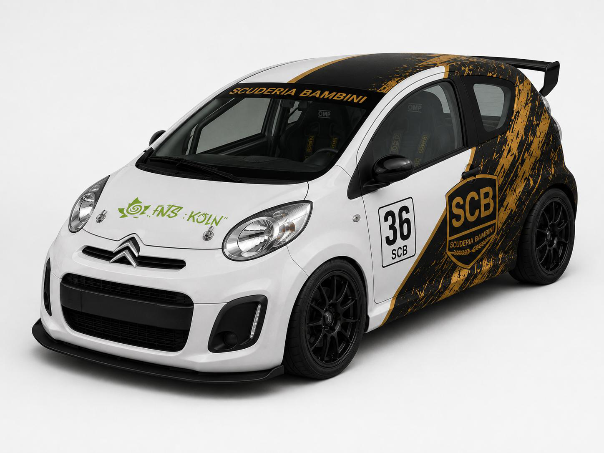
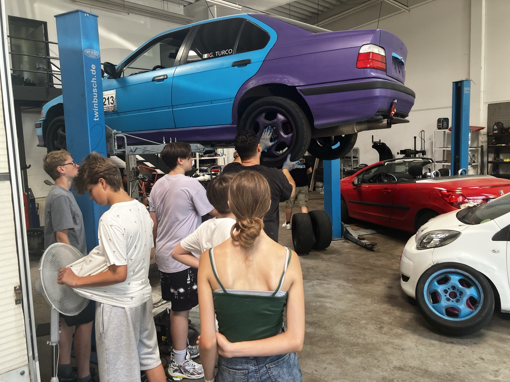
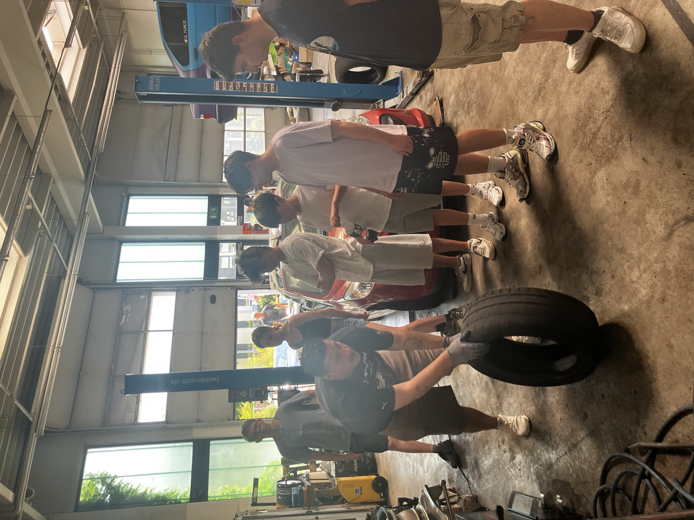
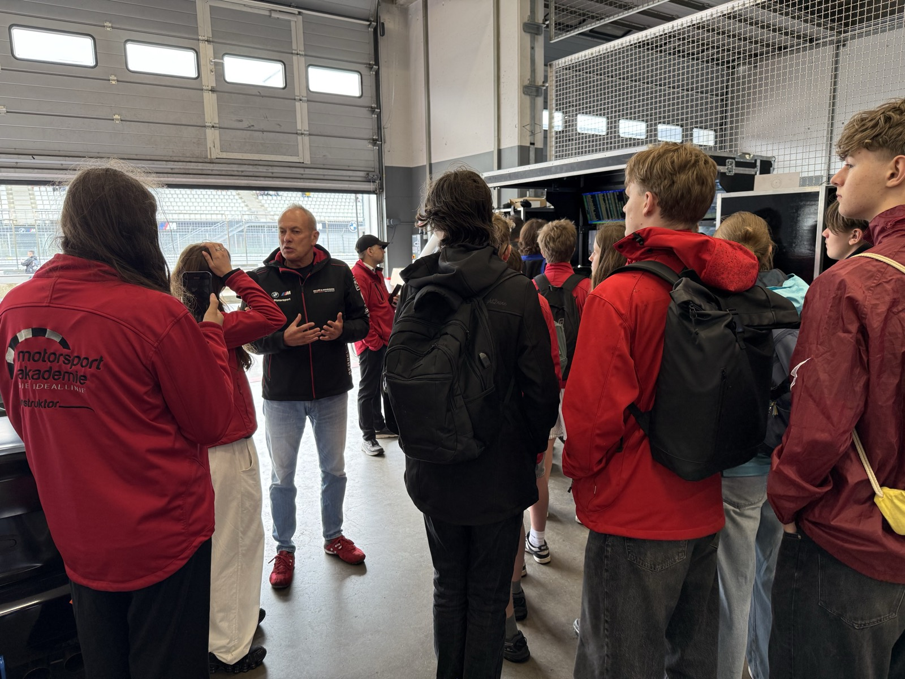

Drei Säulen, ein Team
Unser Motorsport-Projekt verbindet einen technischen Bereich unserer Welt mit nachhaltigem Denken — neugierig, kritisch und verantwortungsvoll.
„Ein Rennwagen fährt nur, wenn alle zusammenarbeiten."
Echtes Racing. Echte Strecke.
Unsere Kids werden Teil des Boxenteams — und fahren das eine oder andere Rennen selbst.
PTC Racing Cup
Identische Autos (Peugeot 107 / Toyota Aygo / Citroën C1) — faire Chancen, das Können entscheidet. Strecken wie Assen, Zandvoort & Meppen.
Auto-Slalom
Präzision, Ideallinie und Fahrzeugbeherrschung auf abgesperrten Flächen — der perfekte Einstieg in den Rennsport.
Werde Rennfahrer:in
Bei uns können Jugendliche ihre offizielle DMSB National A Lizenz machen — der Einstieg in den nationalen Automobilsport ist ab 15 Jahren möglich.
- Grundwissen Sicherheit & Verhalten auf der Strecke
- Fahrtraining mit lizenziertem Instruktor
- Der erste echte Schritt in die Motorsport-Karriere
MINT zum Anfassen
Vom Schrauben bis zur Datenanalyse: Motorsport öffnet Türen zu echten Berufsfeldern.
Schon vorhanden:
Was bisher geschah
Unser Weg vom Klassenzimmer Richtung Rennstrecke — Schritt für Schritt.
-
Der Start
Das Team formiert sich
Sechs engagierte Jugendliche starten Scuderia Bambini — praxisnaher Motorsport statt reiner Theorie.
-
Die Basis
Werkstatt & Simulator eingerichtet
Fanatec-Simulator, zwei Hebebühnen und eine voll ausgestattete Werkstatt — die Grundlage steht.
-
Unser Rennwagen
Citroën C1 #36 im SCB-Design
Unser eigenes Fahrzeug ist da — foliert in Gold & Schwarz mit der Startnummer 36.

-
Rein ins Fahrerlager
Zu Gast bei der Motorsportakademie
Echte Rennabläufe hautnah: Fahrerlager, Boxenteam und Technik direkt an der Strecke erlebt.

-
Praxis pur
Werkstatt-Einblicke & Technik
Schrauben, verstehen, anpacken: Die Jugendlichen lernen Fahrzeugtechnik direkt am Objekt.

-
Als Nächstes
PTC Cup, Slalom & DMSB A-Lizenz
Die nächsten Ziele: erste Rennen im PTC Racing Cup, Auto-Slalom und der Weg zur eigenen Rennlizenz.
Aus Boxengasse & Fahrerlager
Echte Einblicke: unser Rennwagen, die Werkstatt, das Team und unterwegs an der Strecke.

Giuseppe Turco
Gründer von Scuderia Bambini · Rennfahrer · Mentor
Mein Weg führte mich früh in die Selbstständigkeit. Als Geschäftsführer einer GmbH habe ich gelernt, Verantwortung zu tragen, Teams zu führen und unternehmerisch zu denken. Heute führe ich mehrere eigene Unternehmen, unter anderem in den Bereichen Handwerksdienstleistungen und Social-Media-Marketing. Diese Mischung aus praktischem Handwerk und moderner Kommunikation prägt bis heute meine Arbeitsweise: anpacken, gestalten, vermitteln.
Der Motorsport begleitet mich, seit ich denken kann. Mein Vater hat die Begeisterung in mir geweckt, später teilte ich sie mit Freunden – damals noch ausschließlich vor dem Fernseher. Denn genau das ist die Realität für die meisten Motorsportbegeisterten: Die Welt der Rennstrecke wirkt unerreichbar, unübersichtlich und vor allem kostenintensiv. Bis ich eines Tages den richtigen Menschen kennenlernte und meine ersten eigenen Fahrten auf der Rennstrecke machen durfte. Ein Traum, den ich schon als Jugendlicher hatte, wurde Wirklichkeit.
Seit nunmehr vier Jahren bin ich aktiv im Motorsport zu Hause. Ich besitze eine eigene Rennlizenz sowie ein Permit für die Nürburgring-Nordschleife. An der Seite von Christopher Bartz (DMSB-Instruktor A) von der Motorsportakademie begleite ich seither dessen Lehrgänge und unterstütze Rookies auf ihrem Weg zur Rennlizenz – ich motiviere, begleite und helfe ihnen, sich stetig zu verbessern. Aktuell strebe ich selbst die Instruktor-Lizenz B an, die ich voraussichtlich im Februar 2027 erwerben werde.
„Was mir damals fehlte – ein Zugang, ein Mentor, eine Tür in diese Welt – möchte ich den Schülerinnen und Schülern öffnen. Motorsport soll erreichbar werden, verständlich und erlebbar."
Genau diese Erfahrung möchte ich mit dem Motorsport-Projekt an der fns:köln weitergeben. Durch meine starke Präsenz an der Schule und die Leitung der Social-Media-AG bringe ich bereits Erfahrung im Umgang mit Kindern und Jugendlichen mit und weiß, wie man junge Menschen für ein Thema begeistert.
Nachhaltigkeit ist für mich dabei kein Widerspruch, sondern Verpflichtung: Unsere schöne Erde soll noch lange, lange leben, und es ist unsere Pflicht, etwas dafür zu tun. Aber der Spaß darf dabei nicht verloren gehen – denn ein Leben ohne Freude ist nicht lebenswert. Genau diese Balance aus Verantwortung und Begeisterung möchte ich den Jugendlichen vermitteln.
Ich bin 27 Jahre alt, gebürtiger Kölner mit italienischen Wurzeln – und ich freue mich auf jeden jungen Menschen, der mit uns gemeinsam Fahrt aufnimmt.
Partnerschaftsmöglichkeiten
Jedes Unternehmen kann auf seine Weise Teil der Scuderia Bambini werden — vom Unterstützer bis zum Hauptpartner. Individuelle Modelle sind jederzeit möglich.
Warum Partner werden?
- Sichtbarkeit in einem emotionalen Nachwuchsprojekt
- Positives Image durch Jugendförderung und Praxisbildung
- Glaubwürdige Verbindung von Technik, Bildung und Motorsport
- Teil einer starken, medienwirksamen Entwicklung werden
Supporter
- Sichtbarkeit in der Unterstützerübersicht
- Dankeschön in digitalen Beiträgen
Förderpartner
- Erweiterte Präsenz in Kommunikationsmaterialien
- Logo in ausgewählten Projektmedien
Teampartner
- Stärkere Sichtbarkeit im Umfeld des Projekts
- Einbindung in Inhalte und Auftritte
Hauptpartner
- Prominente Präsenz als zentraler Förderer
- Besondere Sichtbarkeit auf zentralen Projektflächen
Werde Sponsor von Scuderia Bambini
Unterstütze junge Talente auf ihrem Weg in den Rennsport — als Geld-, Sach- oder Medienpartner. Erzähl uns kurz von dir, wir melden uns. 🏁